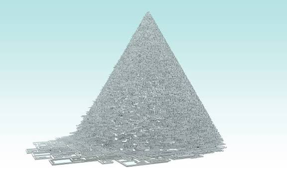

Sam Lavigne and Tega Brain
New York Apartment
2020

New York Apartment combines thousands of real New York City real-estate listings to create one imaginary apartment. The project includes things like photographs, videos, floor plans, prices, and a mortgage calculator. The apartment could never actually exist because it is made from pieces of many different listings. The project uses this impossible apartment to comment on the New York housing market and how expensive and unrealistic finding a home in the city can be.